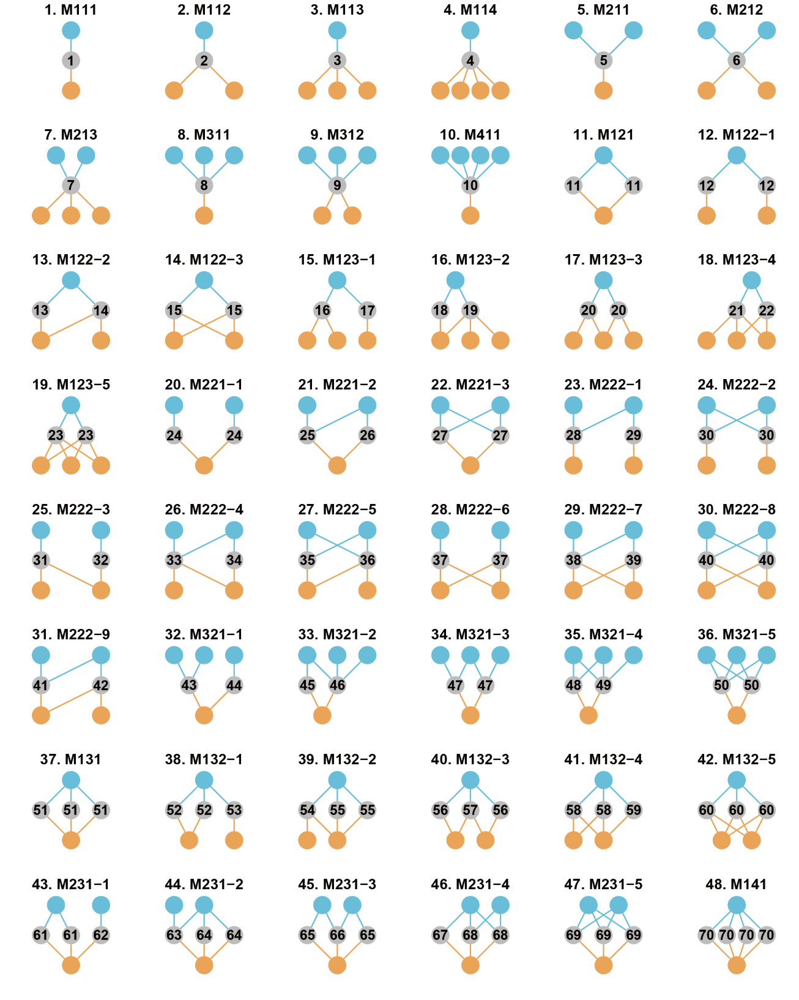

The visualization of an example multilayer interaction network with three parties of nodes and two interaction layers (a, two common forms in literature) and interconnection structures (b, interconnection pattern, c, interconnection motif, d, interconnection centrality). Different colors of nodes indicate different parties of species, and the dashed lines indicate the shared species. (a) The shared species in the left panel were indicated by dashed links, and those in the right panel have links from both layers.

In multilayer network, 48 types of motifs of nodes ranging from 3 to 6 are obtained by that
library(ILSM)
type<-c("M111","M112","M113","M114","M211","M212","M213","M311","M312","M411","M121","M122-1",
"M122-2","M122-3","M123-1","M123-2","M123-3","M123-4","M123-5","M221-1","M221-2",
"M221-3","M222-1","M222-2","M222-3","M222-4","M222-5","M222-6","M222-7","M222-8",
"M222-9","M321-1","M321-2","M321-3","M321-4","M321-5","M131","M132-1","M132-2",
"M132-3","M132-4","M132-5","M231-1","M231-2","M231-3","M231-4","M231-5","M141")
mr <- par(mfrow=c(6,8),mar=c(1,1,3,1))
a<-Multi_motif("all")
for(i in 1:48){
plot(a[[i]],
vertex.size=30, vertex.label=NA,
vertex.color="#D0E7ED",main=type[i])
}
par(mr)The figure below shows the 48 forms of interconnection motifs with 3-6 nodes. Blue and grey nodes form one layer, and grey and orange nodes form the other layer. Grey nodes are connector nodes. The motifs are named “MABC-i”: M means “motif’,”A” is the number of a-nodes, “B” is the number of b-nodes, “C” is the number of c-nodes and “i” is the serial number for the motifs with the same “ABC”. The interconnection motifs are ordered by the number of connector nodes (from 1 to 4). The numbers from 1 to 70 in connector nodes represent the unique roles.
The numbers from 1 to 70 in the grey circle represent the roles in which the 70 nodes are located.
